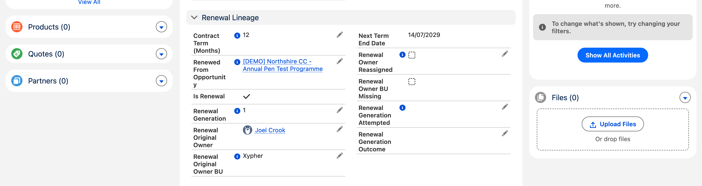
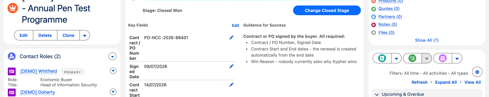
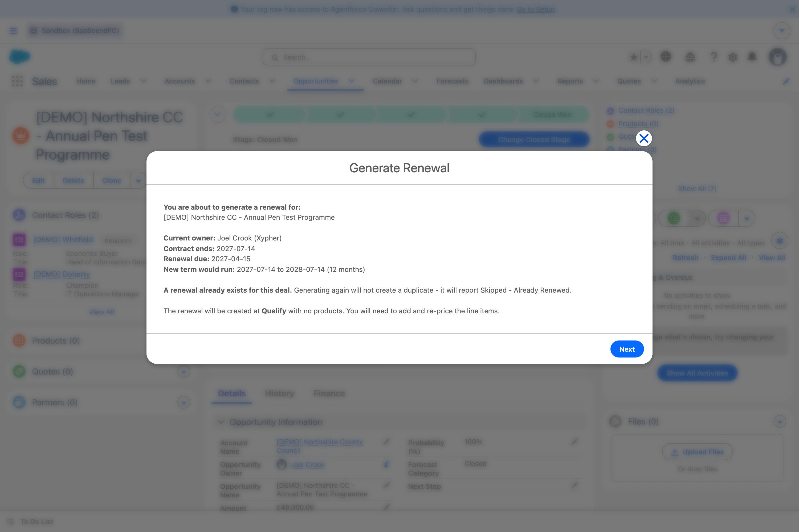
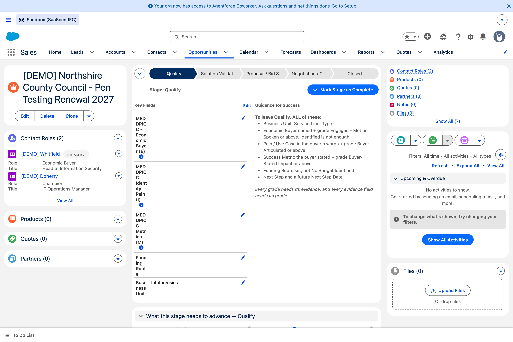
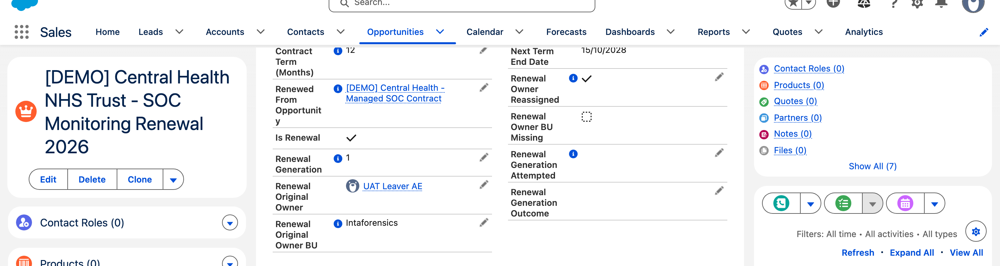

The 90 days, at a glance
Why the middle band matters
The renewal arrives with a next-step date set to 30 days before contract end. That stays in the future for the first 60 days. After that it is in the past — and a past next-step date blocks every stage change until you update it. That is deliberate: a renewal untouched that late genuinely is overdue. A report catches these before you hit the wall.
What arrives, without you doing anything
A job runs daily at 06:00. When a won contract enters its window it creates the renewal, posts guidance on it, and marks the original so it is never processed twice.
| On the new renewal | What you get |
|---|---|
| Stage | Qualify — deliberately, not Proposal |
| Owner | You, if you owned the original and are still active |
| Contract dates | Rolled forward by the term length |
| Amount | Copied from the expiring deal — then re-price it |
| Next Step + date | Set for you, 30 days before contract end |
| Products | None. Deliberately — last year’s prices are last year’s prices |

Plain renewal versus expansion
Tick Renewal Includes Expansion when the scope has genuinely grown. It is the single most consequential tick box on the record.
| Moving from | Plain renewal | Renewal + expansion |
|---|---|---|
| Qualify → Solution Validation | Walks through | Full MEDDPICC qualification |
| Solution Validation → Proposal | Walks through | Procurement Route required |
| Proposal → Negotiation | Walks through | All eight MEDDPICC elements |
| Negotiation → Closed Won | Commercial-close facts | Same |
A plain renewal is about two clicks from Qualify to Proposal. An expansion renewal is a full new-business qualification with a warm start.
Generating one yourself
Open the won contract you want to renew.
Click Generate Renewal in the action bar. If you cannot see it, open the ▾ menu.
Read the confirmation screen — it shows the owner, the contract end date and the term it will roll to.
Click Generate Renewal.
You land on a result screen telling you what happened, with a link to the new deal.
Press the button a second time to prove it refuses.It cannot create a duplicate. If it ever does, tell us immediately.


The guidance it posts for you

If the original owner has left
This one has a financial consequence
The renewal falls to their manager, then to the account owner. Because revenue follows the owner’s business unit, this can change which entity books the revenue.

Intaforensics — a frozen snapshot — while the current owner books to Xypher. Finance can see exactly what moved.The question we need answered
Is that the behaviour you want? The alternative is that the renewal stays with the original business unit and someone there picks it up. We have built the first option and it is reversible — but this is a business decision, not a technical one.
Things you will see and should not worry about
| What you see | Why |
|---|---|
| A renewal with no products | By design. Add and re-price them |
| A won contract that lapsed with no renewal | Automation will not renew a dead contract — a person decides. It shows on a report for exactly that |
| Finance mostly showing “Awaiting BC Customer” | Business Central is not connected yet. Finance reads the records by hand for now |
| No email about any of it | Sandboxes do not send email. Guidance is in Chatter on the record |